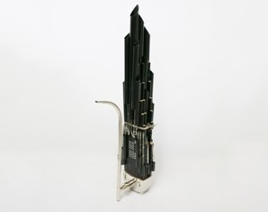
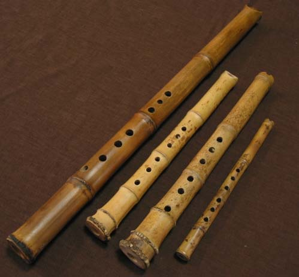
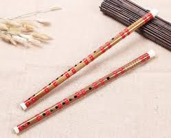

孤身一人時，彈奏一曲《陽春白雪》，即使無人相和又何妨？
若能奏一曲《高山流水》得一知己，此生足矣。
將心意寄託於音，一曲《平沙落雁》借鸿鸪之远志，写逸士之心胸也。
| 樂器 | 樂器圖片 | 詩 |
|---|---|---|
| 琵琶 | 王昌齡《從軍行》之二 『琵琶起舞換新聲，總是關山舊別情。撩亂邊愁聽不盡，高高秋月照長城。』 題解：據莊永平編著的《琵琶手冊》中的統計，唐代詩作中出現與琵琶相關的較有名的作品有近百首。最出名的應該就是《琵琶行》了，裡邊的經典詩句如「嘈嘈切切錯雜彈，大珠小珠落玉盤」等也成為描寫琵琶的經典。 這首從軍行，也可以看出琵琶與邊塞、與軍事也有頗多的聯繫。想起琵琶的起源，在漢代琵琶又稱「批把」，有記載說「批把本出於胡中，馬上所鼓也。推手前曰批，引手卻曰把，象其鼓時，因以為名也。」從中可以看出，琵琶本是在馬上彈奏的樂器向前彈出稱作批，向後挑進稱做把。 | |
| 古箏 | 李端《聽箏》 『鳴箏金栗柱， 素手玉房前。欲得周郎顧， 時時誤拂弦。』 題解：為了所愛慕的人顧盼自己，便故意將弦撥錯，彈箏女可愛形象躍然紙上，用現在的話說就是萌噠噠。周瑜不但是大將還是音樂家，別人奏曲有誤，他就回頭一看，當時人稱：「曲有誤，周郎顧。」,或許這首詩就是受到這個啟發而作的吧。 | |
| 笙 |  | 郎士元《聽鄰家吹笙》 『鳳吹聲如隔彩霞，不知牆外是誰家。 重門深鎖無尋處，疑有碧桃千樹花。』 題解：笙的聲音如隔著彩霞從天而來，不知牆外究竟是哪一家。重重大門緊鎖無處尋覓，但心中猜想其中必有千樹的桃花。雖然是聽笙，但是作者意在創造一種浪漫且引人入勝的意境。 笙既可以吹奏單旋律，也可以吹奏和弦，如同七色彩霞。這個比喻非常的恰當，彩虹也是七色重疊，樂音也有七個，七種樂音對應七色彩霞，絕妙的比喻。 |
| 簫 |  | 杜牧《寄揚州韓綽判官》 『青山隱隱水迢迢，秋盡江南草未凋。二十四橋明月夜，玉人何處教吹簫？』 題解：這首詩是唐代詩人杜牧離開揚州以後懷念昔日同僚韓綽判官而作，這首詩描寫揚州的美景，在美景中簫聲悠揚傳播，也許是羨慕友人有閒情逸緻，也可能是對揚州生活的眷戀。 |
| 笛 |  | 李白《春夜洛城聞笛》 『誰家玉笛暗飛聲，散入春風滿洛城。此夜曲中聞折柳，何人不起故園情。』 題解：李白性格豪爽，喜飲酒。與彈撥相比，吹奏的樂器可能更容易表達豐富的感情，所以李白寫笛的詩歌比較多。笛聲起，思鄉切，在夜深人靜的時候突然聽到了熟悉的笛聲，如同在外地響起自己的故鄉，感情直率真摯又有餘蘊，令人回味無窮。 |
| 古琴 | 白居易《聽幽蘭》 『琴中古曲是幽蘭，為我殷勤更弄看。欲得身心俱靜好，自彈不及聽人彈。』 題解：古琴的歷史悠久，歷代文人多鼓琴，所以留下非常多的詩詞歌賦。白居易不一定是彈琴的高手，但絕對是寫琴詩有的高手，這首《聽幽蘭》中，白居易知琴，知意，追求「身心俱靜好 」，就算不自己彈，聽別人彈也是很好。中國人自古有遇「知音」的美好理想，自己弄琴可以遇聽琴者為知音，聽而不弄者也可以尋弄琴者為知音。 |